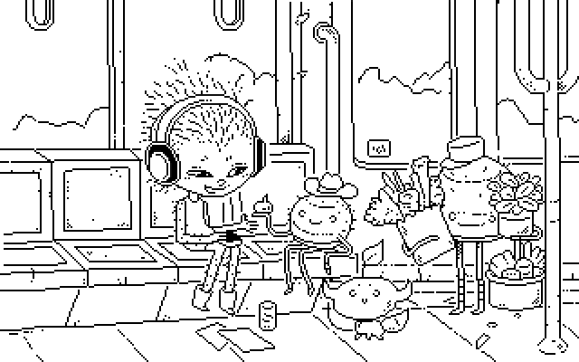

About
About Projects
Projects Games
Games Stories
Stories Store
Store Hobby
Hobby Notes
Notes How-to
How-to
The above image is artwork I did for a 2026 Catjam game called lepore express line.
To make small sprites for a game I will usually use Nasu, I also sometimes use Noodle, but when making larger characters, especially if I am working from a scanned sketch as a reference, I like to use Gimp. Here are a few things to know when using Gimp to get sharp pixels.
Pencil Tool. To make pixel art, you must use the pencil tool. I usually select a round hard-edged brush(hardness 100) and reduce the size to 1 pixel. In the Tool Options menu, uncheck "Enable Dynamics". This will ensure that where won't be any interpolation happening between pixels(no grays), only full black pixels.
Eraser Tool. In the Tool Options menu, uncheck all options but put a check in "hard edge" so that again, you won't get any interpolation happening.
Rotating a Drawing. It is possible to rotate pixelated artwork. Say you're animating and want to re-use part of a drawing. It will get distorted, but I think it a good way to get a good sense of the proportions and design. When rotating, in the Tool Options menu set Interpolation to "None", you will have to set it again when making other transformations(scale, shear, etc) too.
Scaling. To scale a pixel image, it is necessary to limit the scaling to multiples of 100% so that 1 pixel becomes 2(if scaled at 200%), then 3 (300%) or else the pixels will get distorted. When scaling, you also have to set interpolation to "none"(or "nearest neighbour") so that the software uses the existing pixel data without trying to make an average of the existing pixels(which will create undesirable artifacts), this way the pixels will remain crisp :>. In the end, all of the pixels should be perfect squares.